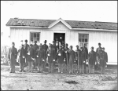
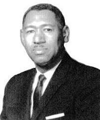

|

| |
Founded on
the Internet
December 13, 1998 |
|
 Dowdy Family Branches Dowdy Family Branches
Research
Website |
| |
|
The Legend of Betsy Dowdy
An Historical Tradition of the Battle of Great Bridge
"The winter of 1775 was
a dark and gloomy time for the Revolutionary Patriots of Eastern
Carolina. Governor Tyron had left his "palace" in New
Bern secretly and hurriedly, had taken refuge on board the armed
Cruizer and was stationed at the mouth of the Cape Fear River,
issuing orders, fortifying the Tory feeling in the Colony, and
inciting the slaves to servile insurrection. Lord Dunmore had
been driven from Williamsburg Va., by popular indignation, had
gone down to Norfolk, VA., and intrenched himself there. From
this position he was annoying the adjacent sections of Virginia
by hostile raids, and was expected to make incursions into the
adjacent section of North Carolina..." read
more
|
|
This entire website, both
lineage and research pages were revised and updated - August
2023 |
|
|
|
|
| |
Famous Dowdys
Learn
about the lives of Dowdys who were famous (or notorious). Are
you related to any of them? Take a look and see! here>> |
DNA Results
The
Dowdy Family Branches website encourages you to submit a DNA
sample as part of the FTDNA "Clan O'Dubhda" project.
See the DNA results so far here>> |
Dowdy Stories
and Narratives
Read the stories of Dowdy pioneer
families, patriots and about normal folk. here>> |
State Research Pages
Alabama
Arkansas
Georgia
Kentucky
Illinois
Indiana
Louisiana
Maryland
Mississippi
Missouri
New York
North
Carolina
Ohio
Oklahoma
South
Carolina
Tennessee
Texas
Pennsylvania
Virginia
West Virginia
1790,
1800, 1810
Censuses
|
|
US Civil War
Discover whether your ancestor fought in the Civil
War - and more importantly, on which side! This page contains
muster rolls, pension applications for both the Union and Confederate
armies. here>>
|
War of 1812 Records
Discover
whether your Dowdy ancestor participated in the War of 1812.
This page contains official records including muster rolls and
penstion application records. here>>
|
Revolutionary War
Records
Discover whether your Dowdy ancestor fought or
gave aid to either the patriot's cause or the British. The page
includes government muster roles and more. here>>
|
|
African American Dowdy
Research
 This page is designed to specifically aid researchers
of African-American ancestry. The page includes census, military,
freedman's records and more. here>> |

|
Dr. Lewis Carnegie Dowdy,
Sixth president and first
chancellor of North Carolina Agricultural and Technical State
University, died Dec.
17, 2000, in Greensboro. He was 83.Dowdy was appointed acting
president of A&T, then known as A&T College, in January
1962 more>>
|
| |
|
|
|
|